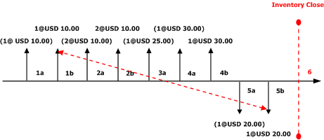
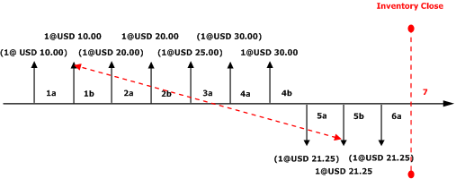
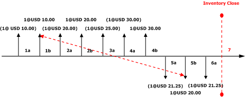

FIFO mit physischem Wert und Markierung
Important
Dynamics 365 for Finance and Operations hat sich zu speziell entwickelten Anwendungen entwickelt, mit denen Sie bestimmte Geschäftsfunktionen verwalten können. Weitere Informationen zu diesen Änderungen finden Sie im Dynamics 365-Lizenzierungshandbuch.
Bei FIFO (First in, First out) handelt es sich um eine Lagersteuerung, bei der die zuerst erworbenen Zugänge das Lager als Erstes wieder verlassen. Wertmäßig aktualisierte Abgänge aus dem Lager werden mit dem ältesten wertmäßig aktualisierten Zugang zu einem Lagerbestand ausgeglichen, der auf dem wertmäßigen Datum der Lagerbuchung basiert.
Wenn Sie FIFO verwenden, müssen Sie die FIFO-Regel nicht verwenden. Stattdessen können Lagerbuchungen markiert werden, damit ein bestimmter Artikelzugang mit einem bestimmten Abgang ausgeglichen wird. Es wird empfohlen, einen regelmäßigen Lagerabschluss durchzuführen, wenn Sie die Lagersteuerung FIFO verwenden. In den folgenden Beispielen werden die Auswirkungen der Verwendung von FIFO anhand von drei unterschiedlichen Konfigurationen veranschaulicht:
- FIFO ohne die Option Physischen Wert einbeziehen
- FIFO mit der Option Physischen Wert einbeziehen
- FIFO mit Markierung
FIFO ohne die Option "Physischen Wert einbeziehen"
In diesem Beispiel ist die Artikelmodellgruppe so konfiguriert, dass der physische Wert nicht einbezogen wird. Die folgende Abbildung zeigt diese Buchungen an:
- 1a. Physischer Lagerzugang für die Menge "1" zu jeweils EUR 10,00 (Kosten).
- 1b. Wertmäßiger Lagerzugang für die Menge "1" zu jeweils EUR 10,00 (Kosten).
- 2a. Physischer Lagerzugang für die Menge "2" zu jeweils EUR 10,00 (Kosten).
- 2b. Wertmäßiger Lagerzugang für die Menge "2" zu jeweils EUR 10,00 (Kosten).
- 3a. Physischer Lagerzugang für die Menge "1" zu jeweils EUR 25,00 (Kosten).
- 4a. Physischer Lagerzugang für die Menge "1" zu jeweils EUR 30,00 (Kosten).
- 4b. Wertmäßiger Lagerzugang für die Menge "1" zu jeweils EUR 30,00 (Kosten).
- 5a. Physischer Lagerabgang für die Menge "1" zu einem Einstandspreis von EUR 20,00 (laufender Durchschnitt wertmäßig aktualisierter Buchungen).
- 5b. Wertmäßiger Lagerabgang für die Menge "1" zu einem Einstandspreis von EUR 15,00 (laufender Durchschnitt wertmäßig aktualisierter Buchungen).
-
- Lagerabschluss wird vorgenommen. Der erste wertmäßig aktualisierte Abgang wird auf Basis der FIFO-Methode gegen den ersten wertmäßig aktualisierten Zugang ausgeglichen. Für die Abgangsbuchung erfolgt eine Regulierung in Höhe von EUR –5,00.
In dem neuen laufenden Durchschnittseinstandspreis ist der Durchschnitt der wertmäßig aktualisierten Buchungen berücksichtigt. Die folgenden Abbildungen zeigen die Auswirkungen des Lagermodells FIFO auf diese Buchungsserie an, wenn die Option Physischen Wert einbeziehen nicht verwendet wird.

Diagrammschlüssel
- Lagerbuchungen sind durch vertikale Pfeile dargestellt.
- Zugänge zum Lager sind als vertikale Pfeile über der Zeitachse dargestellt.
- Abgänge aus dem Lager sind als vertikale Pfeile unter der Zeitachse dargestellt.
- Über (oder unter) den einzelnen vertikalen Pfeilen ist im Format Menge@Einheitenpreis der Wert der Lagerbuchung angegeben.
- Ein in Klammern gesetzter Lagerbuchungswert weist darauf hin, dass die Lagerbuchung physisch in das Lager gebucht wurde.
- Ein nicht in Klammern gesetzter Lagerbuchungswert weist darauf hin, dass die Lagerbuchung wertmäßig in das Lager gebucht wurde.
- Jede neue Zugangs- oder Abgangsbuchung wird mit einer neuen Beschriftung versehen.
- Jeder vertikale Pfeil ist mit einer Sequenzkennung (beispielsweise 1a) versehen. Mit dieser Kennung wird die Reihenfolge der Lagerbuchungen auf der Zeitachse angegeben.
- Lagerabschlüsse sind durch eine vertikale rote gestrichelte Linie und die Beschriftung Lagerabschluss gekennzeichnet.
- Ein durch einen Lagerabschluss vorgenommener Ausgleich ist durch rote diagonale gestrichelte Pfeile dargestellt, die von einem Zugang zu einem Abgang verlaufen.
FIFO mit der Option "Physischen Wert einbeziehen"
Wenn auf der Seite Artikelmodellgruppe das Kontrollkästchen Physischen Wert einbeziehen aktiviert ist, verwendet das System zur Berechnung des laufenden Durchschnittseinstandspreises sowohl physische als auch wertmäßige Zugangsbuchungen. Gegebenenfalls werden auch Regulierungen an der physisch aktualisierten Abgangsbuchung vorgenommen. Ist das Kontrollkästchen Physischen Wert einbeziehen deaktiviert, werden bei einem Lagerabschluss mit dem Lagermodell "FIFO" lediglich die Transaktionen ausgeglichen, die wertmäßig aktualisiert sind. Die folgende Abbildung zeigt diese Buchungen an:
- 1a. Physischer Lagerzugang für die Menge "1" zu jeweils EUR 10,00 (Kosten).
- 1b. Wertmäßiger Lagerzugang für die Menge "1" zu jeweils EUR 10,00 (Kosten).
- 2a. Physischer Lagerzugang für die Menge "1" zu jeweils EUR 20,00 (Kosten).
- 2b. Wertmäßiger Lagerzugang für die Menge "1" zu jeweils EUR 20,00 (Kosten).
- 3a. Physischer Lagerzugang für die Menge "1" zu jeweils EUR 25,00 (Kosten).
- 4a. Physischer Lagerzugang für die Menge "1" zu jeweils EUR 30,00 (Kosten).
- 4b. Wertmäßiger Lagerzugang für die Menge "1" zu jeweils EUR 30,00 (Kosten).
- 5a. Physischer Lagerabgang für die Menge "1" zu einem Einstandspreis von jeweils EUR 21,25 (laufender Durchschnitt wertmäßig und physisch aktualisierter Buchungen).
- 5b. Wertmäßiger Lagerabgang für die Menge "1" zu einem Einstandspreis von jeweils EUR 21,25 (laufender Durchschnitt wertmäßig und physisch aktualisierter Buchungen).
- 6a. Physischer Lagerabgang für die Menge "1" zu einem Einstandspreis von jeweils EUR 21,25.
-
- Lagerabschluss wird vorgenommen. Die erste wertmäßige Abgangsbuchung wird auf Basis der FIFO-Methode reguliert oder mit dem ersten (entweder wertmäßig oder physisch) aktualisierten Zugang ausgeglichen.
Die Buchung "5b" wird mit der Zugangsbuchung "1b" ausgeglichen. Dabei erfolgt für die Abgangsbuchung eine Regulierung in Höhe von EUR –11,25. Im neuen laufenden Durchschnittseinstandspreis ist der Durchschnitt der wertmäßig und physisch aktualisierten Buchungen in Höhe von EUR 27,50 berücksichtigt. Die folgende Abbildung zeigt die Auswirkungen des Lagermodells FIFO für diese Buchungsserie an, wenn die Option Physischen Wert einbeziehen verwendet wird.

Diagrammschlüssel
- Lagerbuchungen sind durch vertikale Pfeile dargestellt.
- Zugänge zum Lager sind als vertikale Pfeile über der Zeitachse dargestellt.
- Abgänge aus dem Lager sind als vertikale Pfeile unter der Zeitachse dargestellt.
- Über (oder unter) den einzelnen vertikalen Pfeilen ist im Format Menge@Einheitenpreis der Wert der Lagerbuchung angegeben.
- Ein in Klammern gesetzter Lagerbuchungswert weist darauf hin, dass die Lagerbuchung physisch in das Lager gebucht wurde.
- Ein nicht in Klammern gesetzter Lagerbuchungswert weist darauf hin, dass die Lagerbuchung wertmäßig in das Lager gebucht wurde.
- Jede neue Zugangs- oder Abgangsbuchung wird mit einer neuen Beschriftung versehen.
- Jeder vertikale Pfeil ist mit einer Sequenzkennung (beispielsweise 1a) versehen. Mit dieser Kennung wird die Reihenfolge der Lagerbuchungen auf der Zeitachse angegeben.
- Lagerabschlüsse sind durch eine vertikale rote gestrichelte Linie und die Beschriftung Lagerabschluss gekennzeichnet.
- Ein durch einen Lagerabschluss vorgenommener Ausgleich ist durch rote diagonale gestrichelte Pfeile dargestellt, die von einem Zugang zu einem Abgang verlaufen.
FIFO mit Markierung
Der Begriff "Markierung" bezeichnet ein Verfahren zum Verknüpfen (oder Markieren) einer Abgangsbuchung mit einer Zugangsbuchung. Eine Markierung kann entweder vor oder nach Ausführung der Buchung erfolgen. Durch die Verwendung einer Markierung lassen sich bei der Ausführung der Buchung oder des Lagerabschlusses die exakten Kosten des Lagers ermitteln. Beispiel: In der Kundendienstabteilung wurde der Eilauftrag eines wichtigen Debitors angenommen. Da es sich bei diesem Auftrag um einen Eilauftrag handelt, müssen Sie für diesen Artikel einen höheren Preis bezahlen, um dem Wunsch des Debitors zu entsprechen. Deshalb müssen Sie sicherstellen, dass bei dieser Auftragsrechnung die Kosten für diesen Lagerartikel in der Gewinnspanne bzw. im Wareneinsatz (COGS/cost of goods sold) berücksichtigt werden. Bei der Buchung des Auftrags erhält das Lager einen Zugang in Höhe von EUR 120,00 (Kosten). Wird dieses Auftragsdokument vor der Buchung des Lieferscheins oder der Rechnung für die Bestellung markiert, beträgt der Wareneinsatz EUR 120,00 (statt der aktuellen laufenden Durchschnittskosten für den Artikel). Wird der Lieferschein oder die Rechnung des Auftrags gebucht, bevor die Markierung vorgenommen wird, erfolgt die Buchung des Wareneinsatzes (COGS) zum laufenden Durchschnittseinstandspreis. Die Markierung der beiden Buchungen kann noch bis zur Ausführung des Lagerabschlusses nachgeholt werden. Wenn eine Zugangsbuchung einer Abgangsbuchung entspricht, wird die in der Artikelmodellgruppe definierte Bewertungsmethode ignoriert, und die Buchungen werden vom System gegenseitig ausgeglichen. Sie können vor der Ausführung der Buchung eine Abgangsbuchung für einen Zugang markieren. Dies kann von einer Auftragsposition auf der Seite Auftragsdetails aus erfolgen. Sie können die offenen Zugangsbuchungen auf der Seite Markierung anzeigen. Sie können auch nach der Buchung der Transaktion eine Abgangsbuchung für einen Zugang markieren. Sie können eine Abgangsbuchung für eine offene Zugangsbuchung für einen gelagerten Artikel aus einer gebuchten Lagerregulierungserfassung abgleichen oder markieren. Die folgende Abbildung zeigt diese Buchungen an:
- 1a. Physischer Lagerzugang für die Menge "1" zu jeweils EUR 10,00 (Kosten).
- 1b. Wertmäßiger Lagerzugang für die Menge "1" zu jeweils EUR 10,00 (Kosten).
- 2a. Physischer Lagerzugang für die Menge "1" zu jeweils EUR 20,00 (Kosten).
- 2b. Wertmäßiger Lagerzugang für die Menge "1" zu jeweils EUR 20,00 (Kosten).
- 3a. Physischer Lagerzugang für die Menge "1" zu jeweils EUR 25,00 (Kosten).
- 4a. Physischer Lagerzugang für die Menge "1" zu jeweils EUR 30,00 (Kosten).
- 4b. Wertmäßiger Lagerzugang für die Menge "1" zu jeweils EUR 30,00 (Kosten).
- 5a. Physischer Lagerabgang für die Menge "1" zu einem Einstandspreis von jeweils EUR 21,25 (laufender Durchschnitt wertmäßig und physisch aktualisierter Buchungen).
- 5b. Wertmäßiger Lagerabgang für die Menge "1" wird für den Lagerzugang aus 2b markiert, bevor die Buchung ausgeführt wird. Diese Buchung erfolgt zu einem Einstandspreis von jeweils EUR 20,00.
- 6a. Physischer Lagerabgang für die Menge "1" zu einem Einstandspreis von jeweils EUR 21,25.
-
- Lagerabschluss wird vorgenommen. Da die wertmäßig aktualisierte FIFO-Buchung für einen vorhandenen Zugang markiert ist, werden diese Buchungen gegenseitig ausgeglichen, und es ist keine Regulierung erforderlich.
Im neuen laufenden Durchschnittseinstandspreis ist der Durchschnitt der wertmäßig und physisch aktualisierten Buchungen in Höhe von EUR 27,50 berücksichtigt. Die folgende Abbildung gibt Aufschluss über die Auswirkungen des FIFO-Lagermodells auf diese Reihe von Buchungen, die bei markierten Ab- und Zugängen anfallen.

Diagrammschlüssel
- Lagerbuchungen sind durch vertikale Pfeile dargestellt.
- Zugänge zum Lager sind als vertikale Pfeile über der Zeitachse dargestellt.
- Abgänge aus dem Lager sind als vertikale Pfeile unter der Zeitachse dargestellt.
- Über (oder unter) den einzelnen vertikalen Pfeilen ist im Format Menge@Einheitenpreis der Wert der Lagerbuchung angegeben.
- Ein in Klammern gesetzter Lagerbuchungswert weist darauf hin, dass die Lagerbuchung physisch in das Lager gebucht wurde.
- Ein nicht in Klammern gesetzter Lagerbuchungswert weist darauf hin, dass die Lagerbuchung wertmäßig in das Lager gebucht wurde.
- Jede neue Zugangs- oder Abgangsbuchung wird mit einer neuen Beschriftung versehen.
- Jeder vertikale Pfeil ist mit einer Sequenzkennung (beispielsweise 1a) versehen. Mit dieser Kennung wird die Reihenfolge der Lagerbuchungen auf der Zeitachse angegeben.
- Lagerabschlüsse sind durch eine vertikale rote gestrichelte Linie und die Beschriftung Lagerabschluss gekennzeichnet.
- Ein durch einen Lagerabschluss vorgenommener Ausgleich ist durch rote diagonale gestrichelte Pfeile dargestellt, die von einem Zugang zu einem Abgang verlaufen.